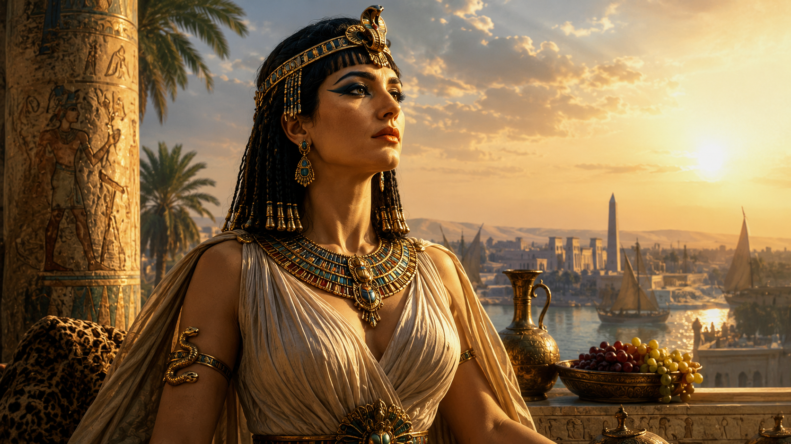

Kleopatra'nın ölümünden iki bin yılı aşkın süre sonra bile onu tanıdığımızı sanıyoruz: olağanüstü güzelliğiyle Roma'nın en güçlü erkeklerini baştan çıkaran, ihtişam içinde yaşayan ve sonunda bir yılanın zehriyle intihar eden Mısır kraliçesi. Fakat bu görüntünün önemli bir bölümü Kleopatra'nın kendi dünyasından değil, onu mağlup edenlerin siyasi dilinden ve yüzyıllar boyunca bu dili yeniden şekillendiren edebiyat, resim ve sinemadan doğdu. Yaşadığı dönemde Kleopatra VII Philopator yalnızca romantik bir hikâyenin kahramanı değildi. Ptolemaios Mısırı'nın hükümdarı, büyük bir mali sistemin başındaki kraliçe, donanma ve diplomasi kullanan bir Akdeniz aktörü ve Roma Cumhuriyeti'nin son iç savaşlarında hesaba katılması gereken bağımsız bir güçtü.
Onu anlamanın güçlüğü de burada başlar. Kleopatra hakkında sikkeler, papirüsler, tapınak kabartmaları ve yazıtlar bulunmasına rağmen hayatının dramatik bölümlerini anlatan edebî kaynakların çoğu onun ölümünden sonra, Roma dünyasında yazıldı. Plutarkhos, Cassius Dio, Strabon, Appianos ve Suetonius vazgeçilmezdir; fakat tarafsız görgü tanıkları değildir. Özellikle Octavianus'un Marcus Antonius ile yürüttüğü iç savaşı "Doğulu bir kraliçeye karşı Roma'nın savaşı" biçiminde sunması, Kleopatra'nın sonraki imgesini derinden etkiledi. Tarihsel Kleopatra'yı bulmak bu yüzden hangi ayrıntının çağdaş kanıta, hangisinin daha geç anlatıya, hangisinin propagandaya ve hangisinin modern hayal gücüne dayandığını ayırmayı gerektirir.
Kleopatra Ne Zaman Yaşadı ve Kimdi?
Bugün "Kleopatra" denildiğinde kastedilen kişi VII. Kleopatra Philopator'dur. Yaklaşık MÖ 70 veya 69 yılında doğdu ve MÖ 30'da, yaklaşık 39 yaşındayken öldü. Babası XII. Ptolemaios'un son yıllarında ortak hükümdarlığa katılmış olabileceğine ilişkin değerlendirmeler bulunsa da siyasi kariyerinin belirleyici başlangıcı babasının MÖ 51'deki ölümüdür. Sonraki yirmi yıl boyunca farklı ortak hükümdarlarla Mısır tahtında kaldı ve Roma'nın ülkeyi ilhak ettiği MÖ 30'a kadar krallığın merkezî siyasi figürü oldu.
Kleopatra için sık kullanılan "Antik Mısır'ın son firavunu" tanımı açıklama gerektirir. O, Ptolemaios Mısırı'nın son büyük ve etkin hükümdarıydı; fakat ölümünden hemen sonra oğlu XV. Ptolemaios Caesar, yani Caesarion, çok kısa süre için nominal hükümdar kabul edilmiş olabilir. Octavianus Caesarion'u öldürttüğünde Ptolemaios hanedanının son ciddi taht iddiası da ortadan kalktı. Bu nedenle Kleopatra'yı Roma ilhakından önceki son etkin Ptolemaios hükümdarı olarak tanımlamak daha hassastır.
Kleopatra'nın dünyası piramitlerin inşa edildiği çağdan da çok uzaktı. Büyük Giza piramitleri o doğduğunda yaklaşık iki buçuk bin yıldır ayaktaydı. Onun Mısırı, Büyük İskender'in fetihlerinden doğan Helenistik dünyanın bir parçasıydı ve Roma Cumhuriyeti Akdeniz'de giderek baskın güç hâline gelmişti. Kleopatra hem binlerce yıllık Mısır krallık geleneklerini hem Makedon-Yunan hanedan kültürünü kullanan, aynı zamanda Roma siyasetinin sert gerçekleriyle yaşamak zorunda kalan bir hükümdardı.
Ptolemaios Hanedanı ve Kleopatra'nın Dünyaya Geldiği Mısır
Kleopatra'nın iktidarını anlamak için MÖ 323'e, Büyük İskender'in Babil'de ölümüne dönmek gerekir. İskender'in komutanları arasında başlayan mücadelede Lagos'un oğlu Ptolemaios Mısır'ın yönetimini ele geçirdi; MÖ 305/304 civarında kral unvanını aldı ve I. Ptolemaios Soter olarak yaklaşık üç yüzyıl sürecek hanedanın kurucusu oldu. Ptolemaioslar Makedon kökenlerini korurken Mısır'da firavunluk kurumunun dilini, tapınaklarını ve dinsel meşruiyet mekanizmalarını da benimsediler.
Sarayın ve yönetimin önemli dili Yunancaydı; hanedan üyeleri kendilerini Helenistik hükümdarlar olarak Akdeniz dünyasına sunuyordu. Buna karşılık Mısır tapınaklarında Ptolemaios kralları geleneksel firavun ikonografisi içinde tanrılara sunu yaparken tasvir edildi. Yerel rahiplik kurumlarıyla ilişkiler, vergi sistemi ve tapınak ekonomileri krallığın yönetimi açısından yaşamsaldı. "Yunan hükümdarlar mı, Mısır firavunları mı?" sorusu bu yüzden yanlış bir ikilik yaratır: Ptolemaios monarşisi her iki siyasi ve kültürel dili de kullanıyordu.
Hanedanın meşruiyeti aile içinde de korunmaya çalışıldı. Kardeş evlilikleri Ptolemaios kraliyet pratiğinin çarpıcı özelliklerinden biriydi. Bunun romantik evlilik anlayışıyla ilgisi yoktu; hanedan iktidarını ve kraliyet unvanlarını saray içinde tutan bir düzenlemeydi. Fakat bu sistem saray içi rekabeti engellemedi. Ptolemaios tarihinin son yüzyılları taht kavgaları, sürgünler, idamlar ve Roma müdahaleleriyle doludur. Kleopatra böyle bir siyasi kültürün içine doğdu.
Büyük İskender'den Ptolemaioslara Mısır
Ptolemaios krallığı gücünün yüksek dönemlerinde Kyrenaika'dan Kıbrıs'a ve Doğu Akdeniz kıyılarına uzanan bölgelerde hâkimiyet kurmuştu. Kleopatra'nın dönemine gelindiğinde eski imparatorluğun önemli bölümü kaybedilmiş ve Roma baskısı belirleyici hâle gelmişti. Kleopatra'nın Antonius ile ittifakı sayesinde eski Ptolemaios etki alanlarının bir bölümünü yeniden kazanması bu tarihsel hafıza içinde değerlendirilmelidir.
Roma ile bağımlı ilişki Kleopatra'dan önce başlamıştı. Babası XII. Ptolemaios Auletes, Roma'daki güçlü kişilere büyük paralar ödeyerek konumunu güvence altına almaya çalıştı. MÖ 58'de İskenderiye'deki muhalefet sonucu ülkeyi terk etti; kızı Berenike IV tahta çıktı. Auletes MÖ 55'te Romalı prokonsül Aulus Gabinius'un askerî müdahalesiyle geri döndü ve Berenike idam edildi. Genç Kleopatra'nın bu olaylardan çıkardığı kişisel dersleri bilemeyiz, ancak içinde yetiştiği saray Roma gücünün Ptolemaios tahtını belirleyebildiğini açıkça görmüştü.
İskenderiye Nasıl Bir Şehirdi?
Kleopatra'nın başkenti İskenderiye, MÖ 331'de Büyük İskender tarafından kurulmuş ve Ptolemaioslar döneminde Akdeniz'in en önemli kentlerinden birine dönüşmüştü. Saray bölgesi, limanları, Pharos deniz feneri, Mouseion ve kütüphane geleneği kente kültürel prestij kazandırıyordu. Yunanlar, Mısırlılar, Yahudiler ve Doğu Akdeniz'in farklı toplulukları burada yaşıyordu; bu çeşitlilik zaman zaman hukuki ve siyasi gerilimleri de beraberinde getiriyordu.
İskenderiye tahıl ve Akdeniz ticaretinin düğüm noktalarından biriydi. Nil Vadisi'nin tarımsal üretimi liman üzerinden dış dünyaya ulaşıyor, kraliyet maliyesi vergiler, gümrükler ve çeşitli tekeller aracılığıyla gelir sağlıyordu. Mısır'ın Roma siyasetinde değerli olmasının nedenlerinden biri de buydu: ülke yalnızca egzotik bir krallık değil, para, tahıl, gemi ve stratejik konum sağlayabilen zengin bir devletti.
Kleopatra Mısırlı mıydı, Yunan mıydı?
Kleopatra'nın bilinen baba soyu Ptolemaios Hanedanı'na, dolayısıyla ağırlıklı olarak Makedon-Yunan bir kraliyet çevresine dayanır. Hanedan Seleukos evlilikleri üzerinden daha uzak İran ve Soğd kökenli atalara da bağlanıyordu. Buna karşılık Kleopatra'nın annesinin kimliği ve bazı kadın soy hatları kesin biçimde bilinmediğinden eksiksiz bir genetik soy ağacı kurmak mümkün değildir.
Bu yüzden "Kleopatra kesinlikle saf Yunan'dı" demek de "kesinlikle siyahi Afrikalıydı" demek de kanıtların taşıyabileceğinden daha kesin olur. Antik dünyadaki Makedon, Yunan ve Mısırlı kimlikleri modern ırk sınıflandırmalarının eşdeğeri değildi. Kleopatra'nın siyasi hanedanı Makedon kökenliydi; kendisi Mısır'da doğdu, Mısır'ın kraliçesi ve firavunluk ideolojisinin taşıyıcısı olarak hüküm sürdü.
Kleopatra'nın Annesi Kimdi?
Yaygın aday XII. Ptolemaios'un eşi Kleopatra V Tryphaina'dır; fakat kaynaklar Kleopatra VII'nin annesini tartışmasız biçimde belirlemez. Geç Ptolemaios soy ağacındaki kadınların kimlikleri zaten araştırmacılar arasında tartışmalıdır. Annenin yerli Mısırlı veya Memfis'teki Ptah rahip çevresiyle bağlantılı olabileceğine ilişkin hipotezler vardır, fakat bunlar doğrudan kanıtlanmış biyografik gerçekler değildir. Babaannesinin kimliği konusundaki belirsizlik de yüzdelik "etnik köken" hesaplarını güvenilmez kılar.
Kleopatra Siyahi miydi? Köken Tartışmasında Ne Biliyoruz?
Kleopatra'nın ten rengini kesin belirleyecek bir beden, güvenilir renkli portre veya genetik veri yoktur. Mevcut soy bilgisi ağırlıklı Makedon-Yunan hanedan kökenini destekler; annelik ve bazı kadın soy hatlarındaki boşluklar ise yüzde yüz hükümleri engeller. Modern "siyah" ve "beyaz" kategorilerini MÖ 1. yüzyıl Akdeniz dünyasına doğrudan taşımak ayrıca anakroniktir. Güvenli sonuç, Ptolemaios hanedan kimliğinin iyi belgelenmiş olması ve bilinmeyen soy hatlarının bilinmiyor olarak bırakılmasıdır.
Kleopatra'nın Eğitimi, Bildiği Diller ve Kişiliği
Kleopatra'nın çocukluk eğitiminin günlük programını bilmiyoruz; fakat Ptolemaios sarayının entelektüel ortamında bir kraliyet mensubunun retorik, edebiyat, siyaset ve yönetim kültürüyle yetişmesi beklenebilir. Daha güçlü kanıt, yetişkin Kleopatra hakkında antik kaynakların verdiği izlenimdir. Plutarkhos onun konuşma gücünü, sesini ve birçok dilde iletişim kurabilmesini özellikle vurgular.
Plutarkhos; Etiyopyalılar, Troglodytler, İbraniler, Araplar, Suriyeliler, Medler ve Partlarla çoğu zaman tercümansız konuşabildiğini yazar ve daha başka dilleri de bildiğinin söylendiğini ekler. Aynı pasaj, önceki Ptolemaios krallarının Mısır dilini öğrenmeye pek yanaşmadığını, Kleopatra'nın ise bunu yapmış olduğunu aktarır. Buradan "tam dokuz" veya "on iki dil" gibi kesin bir sayı çıkarmak mümkün değildir. Mısırca bilmesi onu modern anlamda milliyetçi yapmaz; ancak ülkesinin yerel kültürüyle kurduğu ilişkinin hanedan içinde dikkat çekici olduğunu gösterir.
Plutarkhos'un güzellik değerlendirmesi de önemlidir. Ona göre kraliçenin fiziksel güzelliği tek başına benzersiz ve herkesi ilk görüşte çarpacak türden değildi; asıl etkileyici olan konuşması, sesi ve kişisel varlığıydı. Bu tanıklık Kleopatra'nın ölümünden yaklaşık bir yüzyıl sonra yazılmış olsa da "iki Romalı lideri yalnızca güzelliğiyle baştan çıkardı" klişesine karşı antik geleneğin kendisinin bile daha karmaşık bir portre sunduğunu gösterir.
Kleopatra Nasıl İktidara Geldi?
XII. Ptolemaios MÖ 51'de öldüğünde Kleopatra yaklaşık on sekiz yaşındaydı. Vasiyet düzeni onu küçük kardeşi XIII. Ptolemaios ile ortak hükümdarlığa yerleştirdi. Kardeşlerin evlilik düzenine sokulması Ptolemaios hanedan geleneğinin parçasıydı; modern romantik evlilik anlayışıyla okunmamalıdır.
İlk dönemde Kleopatra kendi konumunu güçlü biçimde öne çıkardı. Fakat XIII. Ptolemaios'un çevresindeki Pothinos, askerî komutan Akhillas ve Theodotos giderek etkili oldu. MÖ 49/48'e gelindiğinde Kleopatra iktidar merkezinden uzaklaştırılmış, Mısır dışına çıkmış ve tahtını geri almak için kuvvet toplamaya başlamıştı.
XIII. Ptolemaios ile Ortak Hükümdarlık
Çatışma yalnızca iki kardeş arasındaki kişisel nefret değildi. Ptolemaios sarayında çocuk hükümdarların çevresindeki danışman grupları maliye, ordu ve dış destek üzerinde hâkimiyet kurabiliyordu. Kleopatra'nın bağımsız hareket etme girişimi XIII. Ptolemaios'un çevresi için doğrudan iktidar tehdidiydi. İki taraf Mısır'ın doğu sınırı yakınında karşı karşıya gelirken Roma'daki iç savaş beklenmedik biçimde Mısır krizine girdi.
Sürgün, İç Savaş ve Pompeius'un Öldürülmesi
MÖ 48'de Julius Caesar'a yenilen Pompeius Mısır'a sığındı. XIII. Ptolemaios'un danışmanları Pompeius'u kabul etmenin Caesar'ın düşmanını desteklemek, geri çevirmenin ise ileride tehlike yaratmak anlamına geleceğini düşündüler ve onu kıyıya çıkarılırken öldürttüler. Bu cinayet Kleopatra'nın emri değildi; o sırada XIII. Ptolemaios'un yönetici çevresiyle savaş hâlindeydi. Pompeius'un başının Caesar'a sunulması da beklenen kazancı sağlamadı. Caesar İskenderiye'ye geldi ve hanedan krizinde hakem rolü üstlenmeye başladı.
Kleopatra ile Julius Caesar'ın İlişkisi
Kleopatra'nın Caesar'la karşılaşması, tarih ile sahne sanatının en fazla birbirine karıştığı anlardan biridir. Plutarkhos, Kleopatra'nın Sicilyalı Apollodoros ile saraya yaklaştığını ve büyük bir yatak torbası ya da kumaş bohça içinde taşınarak Caesar'ın huzuruna sokulduğunu anlatır. Sonraki yüzyıllar bu sahneyi gösterişli bir halıya sarılmış Kleopatra'nın Caesar'ın önünde açılması biçiminde ölümsüzleştirdi.
Kleopatra Caesar'ın Karşısına Gerçekten Halıya Sarılarak mı Çıktı?
Olayın çekirdeği antik kaynağa dayanır: Kleopatra kendisini gizleyerek saraya sokmuştur. Fakat "halı" ayrıntısı sonraki görsel hafızanın ürünüdür; Plutarkhos'un ifadesi daha çok yatak takımı veya taşınabilir bir kumaş torbayı düşündürür. Üstelik Plutarkhos olayı çok daha sonra yazmıştır. Gizli giriş antik gelenekte güçlüdür, sinemadaki kusursuz halı sahnesi aynı kesinlikte değildir.
Caesar ile Kleopatra arasında hem siyasi hem kişisel ilişki gelişti. Kleopatra için Caesar'ın desteği tahtını geri kazanmanın en güçlü yoluydu. Caesar için Mısır, Roma'nın mali ve stratejik çıkarları açısından önemliydi; XII. Ptolemaios'un vasiyeti ve Roma'nın hanedanla geçmiş ilişkileri de müdahale zemini sağlıyordu.
İskenderiye Savaşı ve Kleopatra'nın Tahta Dönüşü
Caesar, Kleopatra ile XIII. Ptolemaios'un ortak hükümdarlığını yeniden kurmaya çalıştı; saray krizi kısa sürede savaşa dönüştü. Akhillas'ın kuvvetleri Caesar'ı İskenderiye'de sıkıştırdı. Kleopatra'nın kız kardeşi Arsinoe IV karşı cepheye geçerek bir süre direnişin sembolik hükümdarı oldu. Roma takviyelerinin gelişiyle savaş Caesar lehine sonuçlandı ve XIII. Ptolemaios kaçış sırasında Nil'de öldü.
Kleopatra tahta döndü, fakat tek başına hükümdar yapılmadı. Diğer küçük kardeşi XIV. Ptolemaios ile ortak hükümdar oldu. Caesar'ın desteği belirleyiciydi; yine de ortaya çıkan düzeni "Roma generali sevgilisine Mısır'ı hediye etti" diye özetlemek Ptolemaios meşruiyetini ve Roma'nın istikrarlı bir Mısır arzusunu gözden kaçırır.
Caesarion Julius Caesar'ın Oğlu muydu?
Kleopatra MÖ 47'de XV. Ptolemaios Caesar'ı, yani Caesarion'u dünyaya getirdi. Kleopatra çocuğun Julius Caesar'ın oğlu olduğunu savundu ve onu daha sonra ortak hükümdar yaptı. Antik dünyada babalık iddiası yaygın biçimde biliniyordu. Buna karşılık Caesar, Roma hukukunda Caesarion'u resmî varisi yapmadı; vasiyetinde evlat edindiği kişi büyük yeğeni Gaius Octavius'tu. Biyolojik babalığı bugün adli kesinlikle doğrulamak mümkün değildir, ancak kronoloji ilişkiyi mümkün kılar ve Kleopatra'nın iddiası tarihsel olarak açıktır.
Kleopatra MÖ 46 civarında Roma'ya gitti ve Caesar'ın villasındaki ikameti antik kaynaklarda iz bıraktı. Caesar MÖ 44'te öldürülünce Mısır'a döndü. XIV. Ptolemaios kısa süre sonra öldü; bazı antik anlatılar Kleopatra'nın onu zehirlettiğini ileri sürer. Siyasi çıkar şüpheyi anlaşılır kılsa da doğrudan kanıt yoktur. Kleopatra ardından Caesarion'u ortak hükümdar yaparak hanedanın geleceğini oğlunun üzerinden kurdu.
Kleopatra Mısır'ı Nasıl Yönetti?
Kleopatra'nın hayatını Caesar ve Antonius ile ilişkilerinin arasına sıkıştırmak, onun yirmi yıla yaklaşan hükümdarlığını görünmez hâle getirir. Kraliçe Ptolemaios devletinin bürokrasisini, vergi sistemini, tarımsal gelirlerini, limanlarını, tapınak ilişkilerini ve para politikasını yöneten bir hükümdardı. Döneminden kalan papirüsler ve sikkeler, kraliyet kararlarının gündelik ekonomi üzerindeki etkisini gösterir. MÖ 33 tarihli ünlü bir papirüste Publius Canidius'a vergi ayrıcalığı tanınır; belgenin altındaki Yunanca ginesthoi sözcüğünün Kleopatra'nın kendi eliyle yazılmış "öyle olsun" onayı olabileceği ileri sürülmüştür. Paleografik yorum ilgi çekicidir, fakat bunu tartışmasız "Kleopatra'nın imzası" diye sunmak temkin sınırını aşar.
Ekonomi, Kıtlık ve Vergiler
Ptolemaios ekonomisi yüksek derecede örgütlenmiş ve vergi yoğun bir sistemdi. Tarım Nil taşkınlarına bağlıydı; taşkının yetersizliği üretimi, fiyatları ve kraliyet gelirini doğrudan etkileyebilirdi. Kleopatra'nın ilk yılları kıtlık ve ekonomik baskıyla çakıştı. Kraliyet yönetimi tahıl dağıtımı, vergi tahsilatı ve ayrıcalıklar aracılığıyla krizleri yönetmeye çalıştı. Kleopatra'nın bazı sikkelerde ağırlık ve değer düzenlemeleri yapması da para dolaşımını ve devlet finansmanını kontrol etme çabasının parçası olarak değerlendirilir.
Mısır'ın zenginliği sınırsız değildi. Roma'ya geçmişten kalan borçlar, saray harcamaları, donanma, askerî seferler ve diplomatik yükümlülükler mali baskı yaratıyordu. Buna rağmen Kleopatra, özellikle Antonius ittifakı döneminde donanma ve askerî kaynak sağlayabilecek kapasiteyi korudu. Bu, krallığın Roma'nın basit bir kuklası olmadığını gösterir; fakat Roma gücünden tamamen bağımsız olduğu anlamına da gelmez.
İsis Kimliği, Tapınaklar ve Firavunluk İdeolojisi
Kleopatra Mısır rahiplik kurumlarıyla ilişki kurdu ve geleneksel firavunluk temsilini kullandı. Dendera Tapınağı'nın dış duvarındaki büyük kabartmalarda Kleopatra ve Caesarion Mısır hükümdarlık ikonografisi içinde tanrılara sunu yaparken gösterilir. Bu görüntüler fotoğrafik portre değil, firavunun tanrılar karşısındaki ritüel görevini ifade eden ideolojik tasvirlerdir.
Kraliçe özellikle İsis ile ilişkilendirildi. Helenistik kraliyet ideolojisinde tanrıçalarla özdeşleşme yeni değildi; Kleopatra'nın İsis kimliği de hem Mısır dinsel geleneğine hem Akdeniz'de genişleyen İsis kültüne seslenebiliyordu. Antonius ile birlikte Dionysos-Osiris ve İsis çağrışımlarını kullanan kraliyet gösterileri, daha sonra Octavianus propagandasında "Doğulu aşırılık" olarak sunulacaktı. Oysa hükümdarların tanrısal modellerle temsil edilmesi Helenistik monarşinin bilinen siyasi dilinin parçasıydı.
Kleopatra Güçlü Bir Hükümdar mıydı?
Kleopatra'yı modern anlamda demokrat, halkçı veya ulusal kurtuluşçu bir lider olarak sunmak anakronik olur. O, hanedanının iktidarını korumaya çalışan mutlak bir Helenistik hükümdardı. Vergi topladı, rakiplerini tasfiye etti, siyasi evlilik ve ittifaklar kullandı. Fakat aynı nedenle onu Roma'nın yönlendirdiği pasif bir kraliçe saymak da tarihsel tabloyu bozacaktır. Kıbrıs'ın yeniden krallığa bağlanması, Antonius döneminde Levant ve Kyrenaika'daki bazı bölgeler üzerinde haklar kazanması, donanma oluşturması ve kendi adına sikke bastırması aktif bir egemenlik siyasetini gösterir.
Kleopatra'nın hedefi Roma'yı fethetmekten çok Ptolemaios krallığının güvenliğini ve bölgesel gücünü yeniden kurmaktı. Roma iç savaşları ona hem tehlike hem fırsat sundu. Caesar ve daha sonra Antonius ile ittifaklar, krallığın varlığını sürdürmesinin araçlarıydı. Bu strateji uzun süre işe yaradı; fakat Roma'daki güç mücadelesi tek bir galibin, Octavianus'un, lehine kapandığında Mısır'ın manevra alanı da ortadan kalktı.
Kleopatra Kardeşlerini Öldürttü mü?
Kleopatra'nın ailesinin ölümleri onu "kardeş katili" olarak tanıtan popüler anlatının temelidir; fakat vakaları birbirinden ayırmak gerekir. XIII. Ptolemaios İskenderiye Savaşı'nın sonunda, Caesar'ın kuvvetlerinden kaçarken öldü. Ölümünü Kleopatra'nın özel bir infaz emrine bağlayan kanıt yoktur. XIV. Ptolemaios'un MÖ 44'teki ölümü ise daha kuşkuludur. Kleopatra'nın Caesarion'u onun yerine ortak hükümdar yapması açık siyasi çıkar yaratır ve antik kaynaklarda zehirlenme iddiası bulunur; buna rağmen doğrudan kanıt olmadığı için cinayet kesin hüküm değildir.
Arsinoe IV'ün kaderi daha açıktır. İskenderiye Savaşı'nda Kleopatra'nın karşısında yer alan Arsinoe, Caesar'ın Roma'daki zafer alayında teşhir edildikten sonra Efes'teki Artemis Tapınağı'na sığındı. MÖ 41 civarında Marcus Antonius'un emriyle öldürüldü; antik gelenek Kleopatra'nın bunu talep ettiğini aktarır. Kutsal sığınakta bir Ptolemaios prensesinin öldürülmesi çağdaşlar için bile sert bir eylemdi.
Kleopatra'nın iktidarının karanlık tarafını gizlemek gereksizdir. Hanedan rakiplerinin ortadan kaldırılması Ptolemaios siyasetinde yeni değildi; fakat "herkes böyle yapıyordu" demek de bireysel siyasi sorumluluğu silmez. Kraliçe tahtını ve çocuklarının geleceğini korumak için acımasız kararlar alabilen bir hükümdardı. Onu yalnızca mağdur veya yalnızca canavar olarak görmek aynı ölçüde yetersizdir.
Kleopatra ile Marcus Antonius'un İlişkisi
Caesar'ın ölümünden sonra Roma yeni bir iç savaş dönemine girdi. Octavianus, Marcus Antonius ve Lepidus'un oluşturduğu İkinci Triumvirlik Caesar'ın katillerini yenmeye yöneldi. Doğu eyaletlerinin sorumluluğunu üstlenen Antonius, MÖ 41'de Kleopatra'yı Kilikia'daki Tarsus'a çağırdı. Resmî gerekçe, kraliçenin Caesar'ın katillerine karşı savaş sırasında tutumunu açıklamasıydı; fakat görüşme kısa sürede daha büyük bir siyasi ortaklığın başlangıcına dönüştü.
Tarsus'taki Ünlü Buluşma
Plutarkhos'un Tarsus anlatısı Kleopatra'nın sahneleme gücünü unutulmaz biçimde tasvir eder. Kraliçe süslü bir gemiyle, kokular, müzik ve zengin kumaşlar eşliğinde ilerler; kendisini Aphrodite/İsis çağrışımları içinde sunar. Kent halkı Antonius'u bırakıp onu görmeye gider. Ayrıntıların edebî biçimde işlenmiş olduğu açıktır, ancak tarihsel çekirdek önemlidir: Kleopatra diplomatik görüşmeyi bilinçli bir kraliyet gösterisine çevirmişti.
Bu gösteri yalnızca bir erkeği etkileme girişimi değildi. Helenistik krallar güçlerini tören, zenginlik ve tanrısal çağrışımlarla görünür kılıyordu. Kleopatra Tarsus'a suçlanan bir bağımlı hükümdar gibi değil, kaynakları olan bir kraliçe olarak geldi. Antonius'un da doğu siyasetinde paraya, tahıla, gemilere ve Partlara karşı planlanan seferler için güvenilir müttefiklere ihtiyacı vardı.
Aşk mı, Siyasi İttifak mı?
Kleopatra ile Antonius'un ilişkisi kişiseldi; üç çocuk sahibi olmaları ve yıllarca birlikte yaşamaları bunu yalnızca diplomatik anlaşmaya indirgemeyi anlamsız kılar. Fakat ilişkinin siyasi temeli en az romantik boyutu kadar belirgindir. Antonius doğudaki savaşlarını finanse etmek ve bölgeyi istikrara kavuşturmak istiyordu. Kleopatra ise Ptolemaios krallığının kaybettiği toprakları geri almak, Caesarion'un konumunu güçlendirmek ve Roma'daki iktidar dengesi içinde Mısır'ın güvenliğini sağlamak istiyordu.
Antonius'un Kleopatra tarafından "büyülenerek aklını kaybettiği" anlatısı Octavianus propagandasının en etkili ürünlerinden biridir. Romalı bir komutanın yabancı kraliçenin etkisi altında Romalılığından uzaklaştığı fikri, siyasi rakibi kadınlaştırmanın ve itibarsızlaştırmanın güçlü yoluydu. Bu propaganda gerçek siyasi hataları yok saymamızı gerektirmez. Antonius ve Kleopatra'nın Part seferleri, Ermenistan siyaseti, Roma kamuoyuyla ilişkileri ve son savaş hazırlıkları tartışmalı kararlar içeriyordu. Ancak bunları büyüleyici bir kadının kurbanı olmuş iradesiz bir adam hikâyesine çevirmek tarih değildir.
Kleopatra'nın Çocukları Kimlerdi?
Kleopatra'nın dört çocuğu vardı. En büyüğü Caesarion, Kleopatra'nın Julius Caesar'ın oğlu olduğunu ilan ettiği XV. Ptolemaios Caesar'dı. Antonius ile ilişkisinden MÖ 40'ta ikizler Alexander Helios ve Kleopatra Selene II, daha sonra Ptolemaios Philadelphos doğdu. Çocukların isimleri bile hanedanın siyasi vizyonunu yansıtır: güneş ve ay anlamları taşıyan Helios ve Selene, Ptolemaios ve Seleukos dünyasına seslenen hanedan adlarıyla birleşiyordu.
MÖ 34'teki İskenderiye Bağışları sırasında çocuklara geniş bölgelerin krallık unvanları dağıtıldı. Bu toprakların bir kısmı fiilen Roma veya başka güçlerin kontrolündeydi; dolayısıyla tören geleceğe dönük bir hanedan programıydı. Caesarion "Kralların Kralı" çizgisinde yükseltilirken Kleopatra "Kralların Kraliçesi" olarak sunuldu. Roma'da bu görüntü, Antonius'un Roma topraklarını yabancı bir hanedana dağıttığı iddiasını besledi.
MÖ 30'daki yenilgiden sonra çocukların kaderleri ayrıldı. Caesarion Mısır'dan kaçmaya çalıştı, fakat geri dönmeye ikna edildi veya yakalandı ve Octavianus'un emriyle öldürüldü. Antonius'tan olan çocuklar Roma'ya götürüldü ve Antonius'un eski eşi, aynı zamanda Octavianus'un kız kardeşi Octavia'nın evinde yetiştirildi. Alexander Helios ve Ptolemaios Philadelphos'un sonraki hayatları belirsizdir. Kleopatra Selene ise Mauretania kralı II. Juba ile evlendi ve Kuzey Afrika'da kraliçe oldu. Onun yönetimindeki kraliyet kültürü ve sanat, annesinin Ptolemaios mirasının Roma dünyasında bütünüyle yok olmadığını gösterir.
İskenderiye Bağışları ve Octavianus'un Propagandası
MÖ 34'te Antonius'un Ermenistan seferinin ardından İskenderiye'de düzenlenen büyük tören, Roma'daki propaganda savaşının dönüm noktalarından biri oldu. Kleopatra ve çocukları tahtlarda sergilendi; Caesarion'un statüsü yükseltildi, Alexander Helios'a Ermenistan, Media ve henüz fethedilmemiş Part ülkesiyle bağlantılı krallık iddiaları, Kleopatra Selene'ye Kyrenaika ve Libya, Ptolemaios Philadelphos'a Suriye ve Kilikia'yla ilişkili unvanlar verildi. Kleopatra'nın mevcut krallığı da genişletilmiş Ptolemaios etki alanıyla birlikte sunuldu.
Octavianus bu töreni Antonius'un Roma çıkarlarına ihanetinin kanıtı gibi kullandı. Daha da önemlisi, Antonius'a karşı yürütülen yeni iç savaşı bir Romalıya karşı savaş gibi göstermek siyasi açıdan tehlikeliydi. Octavianus'un çözümü savaşı resmen Kleopatra'ya karşı yöneltmekti. Böylece çatışma "Roma yurttaşlarının birbirini öldürdüğü bir iç savaş" olmaktan çıkarılıp yabancı, Doğulu bir kraliçenin Roma'yı tehdit ettiği savunma savaşına dönüştürülebilirdi.
Propaganda Kleopatra'yı lüks düşkünü, cinsel açıdan tehlikeli, Romalı erkeği iradesizleştiren ve Roma'ya hükmetmek isteyen bir yabancı olarak resmetti. Antonius'un İskenderiye'de yaşaması, Kleopatra'nın İsis temsilleri ve Dionysosçu kraliyet gösterileri Roma'da "Doğululaşma" suçlamasına malzeme oldu. Antonius'un vasiyetinin Octavianus tarafından ele geçirilip kamuoyuna açıklanması da bu kampanyanın parçasıydı; vasiyetin Vestal rahibelerinden alınmasının hukuki ve dinsel sorunları olmasına rağmen propaganda etkisi büyüktü.
Kazanan tarafın siyasi atmosferi sonraki edebî kaynakları etkiledi. Bu, Kleopatra hakkındaki bütün olumsuz bilgilerin yalan olduğu anlamına gelmez. Kaynak eleştirisinin görevi tersine propaganda yapmak değil, bir iddianın kimin çıkarına hizmet ettiğini, ne zaman yazıldığını ve başka kanıtlarla ne ölçüde uyuştuğunu değerlendirmektir.
Aktium Savaşı Neden Kaybedildi?
MÖ 31'de Yunanistan'ın batı kıyısındaki Aktium'da gerçekleşen deniz savaşı, Kleopatra ve Antonius'un kaderini belirledi. Popüler anlatı savaşın ortasında Kleopatra'nın korkup kaçtığını, Antonius'un da aşkından onun peşine düştüğünü söyler. Bu sahnenin antik anlatılarda kökleri vardır; ancak bütün seferi birkaç dakikalık psikolojik drama indirger.
Octavianus'un en büyük avantajlarından biri Marcus Vipsanius Agrippa'nın deniz stratejisiydi. Agrippa Antonius'un ikmal hatlarına saldırdı, Methone gibi stratejik noktaları ele geçirdi ve kuvvetlerini Ambrakia Körfezi çevresinde sıkıştırdı. Antonius'un ordusunda hastalık, erzak sıkıntısı ve firarlar arttı. Kara kuvveti büyük olmasına rağmen denizden kuşatma baskısı stratejik seçenekleri daralttı. Kleopatra'nın Mısır filosu ve hazine taşıyan gemileri savaş planının merkezindeydi; kraliçe savaş alanında tesadüfen bulunan bir seyirci değildi.
Kleopatra Gerçekten Savaştan Kaçtı mı?
Kleopatra'nın yaklaşık altmış gemilik filosuyla çatışma hattından çıkıp güneye yöneldiği ve Antonius'un onu takip ettiği konusunda antik anlatılar birleşir. Tartışma bunun nedenidir. Bir yorum, Kleopatra'nın paniğe kapıldığını kabul eder. Başka bir yaklaşım ise Antonius ve Kleopatra'nın kuşatmayı yarıp filonun, hazinenin ve liderliğin bir bölümünü kurtarmayı önceden planladığını; savaşın tamamını kazanmak yerine çıkış koridoru açmaya çalıştığını öne sürer. Gemilerde yelkenlerin hazır bulunması ve hazine gibi unsurlar bu ikinci yorumu desteklemek için kullanılmıştır.
Kesin plan belgesi elimizde değildir. Bu yüzden "Kleopatra korkakça kaçtı" kadar "her şey kusursuz hazırlanmış bir kaçış operasyonuydu" demek de fazla kesindir. Açık olan, liderlerin ayrılışından sonra Antonius'un kalan deniz kuvvetlerinin yenildiği ve kara ordusunun da kısa süre içinde çözüldüğüdür. Aktium tek başına Kleopatra'nın kararı yüzünden kaybedilmedi; Agrippa'nın abluka stratejisi, ikmal krizi, hastalıklar, firarlar ve komuta sorunları yenilginin zeminini çoktan hazırlamıştı.
İskenderiye'nin Düşüşü ve Antonius'un Ölümü
Aktium'dan sonra Kleopatra ve Antonius Mısır'a döndüler. Bir yıl boyunca diplomasi, asker toplama ve servetin korunması gibi yollarla yaklaşan felaketi durdurmaya çalıştılar. Kleopatra'nın çocukları için çıkış yolu aradığı, hatta Kızıldeniz üzerinden başka bölgelere geçme ihtimalini değerlendirdiği aktarılır. Octavianus ise MÖ 30'da Mısır'a ilerledi ve İskenderiye'nin savunması çöktü.
Antonius'un sonu da dramatik antik anlatılarla bilinir. Kleopatra'nın öldüğüne dair yanlış haber aldığı, bunun üzerine kılıcıyla kendisini yaraladığı ve ölmek üzereyken Kleopatra'nın bulunduğu anıt-mezar yapısına götürüldüğü anlatılır. Plutarkhos sahneyi son derece canlı aktarır. Olayın temelinde Antonius'un yenilgi sonrasında intihar ettiği açıktır; son konuşmalar ve dramatik ayrıntılar ise biyografik edebiyatın biçimlendirdiği unsurlar olabilir.
Kleopatra artık Octavianus'un tutsağıydı. Onunla görüşerek krallığının veya en azından çocuklarının geleceğini kurtarmaya çalışmış olması siyasi kariyeriyle uyumludur. Antik kaynaklar aynı zamanda Roma'daki zafer alayında zincirlenerek sergilenmekten korktuğunu vurgular. Arsinoe'nin yıllar önce Caesar'ın zafer alayında teşhir edilmiş olması düşünüldüğünde bu ihtimal Kleopatra için soyut değildi.
Kleopatra Nasıl Öldü?
Kleopatra'nın ölümünde bildiğimiz şeylerle bildiğimizi sandığımız şeyler arasındaki fark özellikle büyüktür. Güvenli çerçeve şöyledir: Kleopatra MÖ 30'un Ağustos ayında İskenderiye'de öldü; ölüm büyük olasılıkla intihardı; antik anlatılarda yanında Iras ve Charmion adlı iki hizmetkârının da öldüğü aktarılır. Fakat kullanılan yöntemi kesin olarak bilmiyoruz. Kleopatra'nın bedeni veya mumyası bulunmadığı için modern toksikoloji de olasılıkları karşılaştırmaktan öteye gidemez.
Yılan anlatısı çok eskidir. Strabon, Kleopatra'nın ya bir asp/yılan sokmasıyla ya da zehirli bir merhemle öldüğünün söylendiğini aktarır. Plutarkhos incirlerin arasına gizlenmiş bir asp hikâyesini verir, fakat kendisi de gerçeğin kimse tarafından kesin bilinmediğini söyler ve zehir taşıyan bir araç ihtimalini aktarır. Cassius Dio da bedende küçük izlerden söz eder; yılanın bir kapta veya çiçekler arasında getirilmiş olabileceğini ya da zehir sürülmüş bir saç iğnesi kullanılmış olabileceğini yazar. Antik kaynakların kendi içindeki bu çeşitlilik, tek bir yöntemin kesin bilgi olmadığını gösterir.
Kleopatra'yı Gerçekten Yılan mı Soktu?
Mısır kobrası ölümcül zehir taşıdığı için biyolojik olarak imkânsız bir aday değildir. Ayrıca kobra, Mısır kraliyet ikonografisinde güçlü bir simgeydi ve Kleopatra'nın ölümünü görsel olarak son derece etkili hâle getiriyordu. Plutarkhos, Octavianus'un Roma'daki zafer alayında Kleopatra'nın kolunda bir yılanla tasvir edilen görüntüsünü taşıttığını aktarır. Bu doğruysa yılan imgesi ölümden çok kısa süre sonra resmî zafer anlatısının parçası olmuştu.
Bununla birlikte popüler "incir sepetindeki kobra" sahnesinde pratik sorunlar vardır. Büyük bir yılanın fark edilmeden içeri sokulması, iki veya üç kişiye kontrollü biçimde ölümcül doz vermesi ve beklenen klinik tablonun antik betimlemelerle uyumu tartışılmıştır. Bu itirazlar yılanı imkânsız kılmaz; yalnızca hikâyenin ayrıntılarının kanıtlanmadığını gösterir. "Yılan teorisi tamamen çürütüldü" iddiası da "kesinlikle kobra soktu" iddiası kadar ileri gider.
Zehir, İğne ve Cinayet Teorileri
Kleopatra'nın zehirler üzerinde deney yaptığına ilişkin antik anlatılar vardır. Bu nedenle önceden hazırlanmış bir zehir karışımı, zehirli merhem veya deriyi delen küçük bir araç ihtimalleri modern tartışmalarda ciddiye alınır. Cassius Dio'nun zehir sürülmüş saç iğnesi anlatısı bu alternatifin antik köklerinin bulunduğunu gösterir. Fakat hangi madde kullanılmış olabileceğine ilişkin modern reçeteler çoğunlukla varsayımsaldır.
Octavianus'un Kleopatra'yı öldürttüğü veya intihara zorladığı teorileri de ortaya atılmıştır. Octavianus'un onun ölümüyle siyasi açıdan kazanç sağladığı açıktır; yaşayan Kleopatra hem zafer alayında değerli bir tutsak hem de potansiyel siyasi sorun olabilirdi. Antik anlatılar ise Octavianus'un onu canlı tutmak istediğini ve ölümünden sonra şaşırdığını söyler. Bu anlatıların Augustus yanlısı çerçevesi hesaba katılmalıdır, ancak doğrudan cinayeti kanıtlayan bağımsız veri yoktur.
Bugün Ölüm Nedeni Hakkında Ne Söyleyebiliriz?
Doğrudan bildiğimiz, Kleopatra'nın Octavianus'un kontrolü altındaki İskenderiye'de öldüğü ve ölümünün hemen ardından Ptolemaios iktidarının sona erdiğidir. Kaynakların güçlü biçimde desteklediği olasılık intihardır. Yılan, zehirli iğne veya karışım yöntemin nasıl gerçekleştiğine ilişkin tartışmalı seçeneklerdir. "İncir sepetindeki tek kobra her şeyi kesin olarak açıklar" ise kanıtlanamayan popülerleşmiş biçimdir.
Kleopatra'nın ölümünü yalnızca romantik bir "Antonius olmadan yaşamak istemedi" hikâyesine çevirmek de siyasi bağlamı siler. Krallığı yenilmiş, başkenti düşmüş, çocuklarının geleceği Octavianus'un eline geçmiş ve kendisi Roma zaferinin simgesine dönüşme ihtimaliyle karşı karşıya kalmıştı. İntihar etmişse kararın kişisel yas kadar kraliyet onuru, siyasi yenilgi ve esaret korkusuyla ilişkili olması mümkündür.
Kleopatra'nın Mezarı Bulundu mu?
Hayır. Kleopatra'nın mezarı 2026 itibarıyla kesin biçimde bulunmuş değildir. Antik kaynaklar Octavianus'un Kleopatra ile Antonius'un birlikte gömülmesine izin verdiğini aktarır. Fakat mezarın tam konumu belirtilmez. İskenderiye'nin Ptolemaios kraliyet bölgesinin önemli kısımları sonraki yüzyıllarda deprem, kıyı çökmesi, tsunami etkileri ve kentsel dönüşüm nedeniyle değişmiş veya deniz altında kalmıştır. Bu yüzden birçok araştırmacı mezarın antik kraliyet bölgesinde aranmasını doğal görür.
İskenderiye ve Taposiris Magna İhtimalleri
En çok kamuoyu ilgisi çeken alternatif, İskenderiye'nin yaklaşık 45 kilometre batısındaki Taposiris Magna'dır. Kathleen Martínez'in yıllardır yürüttüğü çalışmalar burada Ptolemaios dönemine ait sikkeler, mezarlar, mimari kalıntılar ve yeraltı yapıları ortaya çıkardı. 2024'te tapınak alanındaki yeni buluntular arasında yüzlerce sikke ve kraliyet tasvirleri tartışıldı; beyaz mermer bir kadın heykelciğinin Kleopatra'yı gösterdiği önerisi Mısır Eski Eserler yetkililerinin de belirttiği üzere uzmanlar arasında kabul edilmiş değildir.
2025'te Martínez ve Bob Ballard'ın ekibi Taposiris Magna kıyısında su altında antik bir liman alanı belirledi. Sütunlar, taş yapılar, çapalar ve Ptolemaios dönemi amphoraları, tapınak ile deniz arasındaki bağlantının sanıldığından daha güçlü olduğunu gösterdi. Bu keşif Taposiris Magna'nın Ptolemaios çağındaki önemini artırır; fakat Kleopatra'nın mezarını bulmuş değildir. Limanın keşfi ile kraliçenin gömü yeri arasında henüz doğrudan arkeolojik bağ yoktur.
Güncel Kazılar Gerçekte Neyi Kanıtlıyor?
Taposiris Magna hipotezinin cazibesi, alanın Osiris-İsis kültüyle ilişkisi ve Kleopatra'nın İsis temsili arasında kurulan bağlantıdır. Fakat "Kleopatra İsis'ti, o hâlde mutlaka burada gömüldü" çıkarımı tek başına arkeolojik kanıt değildir. Kraliyet mezarlarının İskenderiye'deki hanedan merkezine yerleştirilmesi de güçlü bir tarihsel beklentidir. Mezarın deniz altında kalmış, antik çağda yağmalanmış, sonraki inşaatlarla yok edilmiş veya henüz keşfedilmemiş olması mümkündür.
Dolayısıyla her yeni tünel, sikke veya heykel buluntusunu "Kleopatra'nın mezarına bir adım kaldı" başlığıyla vermek yanıltıcıdır. Taposiris Magna kazıları kendi başına önemli arkeolojik sonuçlar üretmektedir. Kleopatra'nın mezarı için gereken kanıt ise kraliçeyi açıkça tanımlayan bir mezar bağlamı, yazıt veya karşılaştırılabilir derecede doğrudan veridir. Şimdilik böyle bir keşif yoktur.
Kleopatra Nasıl Görünüyordu ve Gerçekten Güzel miydi?
Kleopatra'nın gerçek yüzünü fotoğraf kesinliğiyle bilmiyoruz. En sağlam çağdaş veya çağdaşa yakın kanıtlar sikkeler, bazı portre başları, gemme tasvirleri ve Mısır tapınak kabartmalarıdır. Sikkelerde kraliçe belirgin burun, güçlü çene, diadem ve geriye toplanmış saçla gösterilebilir. British Museum'daki sikkeler ve Kleopatra olarak tanımlanan cam intaglio, Helenistik kraliyet portresinin farklı biçimlerini sergiler.
Bu tasvirleri modern vesikalık fotoğraf gibi okumamak gerekir. Hükümdar portreleri hanedan meşruiyeti ve siyasi mesaj taşır. Antonius ile ortak sikkelerde iki portre arasında bilinçli benzerlik kurulması ittifakı vurgulayabilir. Dendera'daki Kleopatra ve Caesarion kabartmaları ise Mısır tapınak sanatının geleneksel kurallarına uyar; kraliçenin gündelik yüz hatlarını kaydetmek için yapılmamıştır. Berlin ve Vatikan'daki bazı mermer başlar Kleopatra ile ilişkilendirilse de her portre atfı aynı kesinlikte değildir.
"Kleopatra çirkindi" sonucu da "dünyanın en güzel kadınıydı" efsanesi kadar sorunludur. Plutarkhos'un anlatısı güzelliğini inkâr etmez; yalnızca etkisinin olağanüstü fiziksel güzellikten ibaret olmadığını, konuşması ve sesinin güçlü olduğunu vurgular. Antik siyasette bir kraliçenin diplomatik başarısını yüz ölçülerine indirgemek zaten yanlış sorudur. Kleopatra'nın iktidarı, yirmi yıl boyunca devlet yönetebilmesi ve iki ayrı Roma güç merkeziyle ittifak kurabilmesi, görünüşünden çok daha fazla siyasi yetenek gerektiriyordu.
Kleopatra Neden Hâlâ Bu Kadar Ünlü?
Kleopatra MÖ 30'da öldüğünde Octavianus yalnızca Mısır'ı ele geçirmedi; rakibinin hikâyesini anlatma gücünü de kazandı. Mısır Roma eyaletine dönüştü, Caesarion öldürüldü ve Ptolemaios hanedanı sona erdi. Octavianus birkaç yıl sonra Augustus adını alarak Roma'nın ilk imparatoru sayılacak yeni düzeni kurdu. Kleopatra ise bu düzenin kuruluş anlatısında yenilmesi gereken yabancı kraliçeye dönüştü.
Augustus çağının edebiyatında Kleopatra, Roma'ya tehdit oluşturan Doğulu kraliçe imgesiyle yaşadı. Fakat antik tarihçiler zamanla onu daha karmaşık bir karaktere dönüştürdüler. Plutarkhos'un Antonius'un Hayatı, sonraki yüzyılların Kleopatra tasvirleri için en etkili kaynaklardan biri oldu. Orta Çağ ve Rönesans yazarları onu ahlak, tutku ve kader hikâyelerine uyarladı. Shakespeare'in Antony and Cleopatra oyunu siyasi yenilgiyi büyük bir aşk trajedisine dönüştürerek modern Kleopatra'nın temel taşlarından birini oluşturdu.
19. yüzyıl Oryantalist resmi, Kleopatra'yı lüks saraylar, egzotik bedenler ve "Doğu" fantezileri içinde yeniden yarattı. Opera ve tiyatro bu görüntüyü büyüttü. Sinema ise yüzünü dönemin yıldızlarıyla özdeşleştirdi; özellikle 1963 yapımı filmde Elizabeth Taylor'ın canlandırdığı Kleopatra, altın kostümler ve devasa prodüksiyonla küresel hafızaya yerleşti. Bu Kleopatra tarihsel bir rekonstrüksiyondan çok 20. yüzyılın yıldız kültürünün ürünüdür.
Günümüzde tartışma başka bir eksene de kaydı: Kleopatra'nın etnik kökeni, ten rengi ve temsil hakkı. Bu sorular çağdaş toplumların kimlik tartışmaları açısından anlamlı olabilir, fakat tarihsel araştırma bilinmeyen noktaları kesinlikle doldurmamalıdır. Kleopatra'nın kendi çağındaki gücü, modern bir ırk kategorisinden çok Ptolemaios hanedan üyeliği, Mısır krallığı, Akdeniz diplomasisi ve Roma iç savaşlarındaki konumuyla açıklanır.
Kleopatra'nın kalıcı ünündeki en büyük paradoks burada ortaya çıkar. Roma'yı fethedemedi; krallığını kaybetti ve hanedanı sona erdi. Fakat Octavianus'un onu tehlikeli bir düşman olarak büyütmesi, sonraki yazarların aşk ve trajediye dönüştürmesi, ressamların egzotikleştirmesi ve sinemanın onu yeniden üretmesi adını iki bin yıl boyunca canlı tuttu. Onu mağlup eden propaganda, istemeden onun ölümsüzlüğüne hizmet etti. Tarihsel Kleopatra bu efsanelerin arkasında kaybolmuş değildir: sikkelerde, papirüslerde, tapınak duvarlarında ve Roma'nın ona karşı yürüttüğü savaşın ölçeğinde hâlâ görülebilir. Asıl dikkat çekici olan, güzelliğiyle iki erkeği baştan çıkaran bir kadın olması değil; Roma'nın tek egemen güce dönüşmekte olduğu bir çağda Mısır'ın bağımsızlığını korumaya çalışan son büyük Ptolemaios hükümdarı olmasıdır.
Kleopatra'nın Yenilgisi Neden Tarihsel Başarısını Silmez?
Kleopatra'nın hikâyesini yalnızca Aktium'daki yenilgiye bakarak değerlendirmek de yanıltıcıdır. Tahta çıktığında Ptolemaios krallığı zaten uzun süredir Roma'nın ekonomik ve askerî baskısı altındaydı; babası Roma müdahalesiyle geri getirilmiş, Kıbrıs daha önce Roma tarafından ilhak edilmiş ve hanedan içi çatışmalar devletin gücünü aşındırmıştı. Kleopatra bu koşullarda yaklaşık yirmi yıl boyunca Mısır'ın ayrı bir krallık olarak varlığını sürdürdü. Caesar'ın ölümünden sonra Roma'da yeniden başlayan iç savaşın yarattığı boşluğu kullandı, eski Ptolemaios nüfuz alanlarının bir bölümünü geri aldı ve krallığını Doğu Akdeniz siyasetinin merkezine taşıdı. Sonunda Octavianus karşısında kaybetmesi, bu ara dönemdeki siyasi kapasitesini ortadan kaldırmaz.
Aynı şekilde Kleopatra'nın Roma ile ittifak kurmasını "Mısır'ı yabancılara teslim etmek" diye okumak dönemin güç dengesini yanlış yansıtır. MÖ 1. yüzyılda Doğu Akdeniz'deki hiçbir büyük hükümdar Roma'yı hesaba katmadan siyaset yürütemezdi. Kleopatra'nın sorunu Roma ile ilişki kurması değil, Roma'daki iç savaşın sonunda yanlış tarafta kalmasıydı. Caesar döneminde kazandıran kişisel ve siyasi ittifak modeli, Antonius ile tekrarlandığında Octavianus'un zaferi nedeniyle yıkıcı sonuç verdi. Stratejinin mantığı ile sonucunu birbirinden ayırmak, hükümdarın kararlarını sonradan bildiğimiz sonuçlara göre yargılamayı engeller.
Onun yönetiminin başka bir kalıcı özelliği, Ptolemaios krallığının iki yüzlü hükümdarlık dilini ustalıkla kullanmasıdır. Akdeniz dünyasına Yunanca konuşan Helenistik bir kraliçe olarak seslenirken Mısır tapınaklarında firavunluk geleneğinin içinde yer aldı. Caesarion'u Dendera'da yanında göstermesi, sikkelerde kendi portresini ve unvanlarını kullanması, İsis ile ilişkilendirilmesi ve çocuklarına bölgesel krallık iddiaları vermesi tek bir hedefe bağlanıyordu: hanedanın geleceğini güvenceye almak. Bu proje başarısız oldu, ancak başarısız olması onun bilinçli bir kraliyet programı olmadığı anlamına gelmez.
Kleopatra'nın gerçek tarihsel ağırlığı da burada aranmalıdır. Roma kaynaklarının erotikleştirdiği kadın figürünün arkasında mali kaynak yöneten, farklı siyasi diller kullanan, saray rakipleriyle mücadele eden, çocuklarının verasetini planlayan ve giderek tek merkezde birleşen Roma gücüne karşı krallığının hareket alanını korumaya çalışan bir hükümdar vardı. Onu idealize etmek gerekmez; kardeş mücadeleleri, sert tasfiyeler ve riskli ittifaklar iktidarının parçasıdır. Fakat bu kararları yalnızca aşk hayatının uzantısı saymak, Octavianus propagandasının en kalıcı başarısını bugün yeniden üretmek olur.
Kleopatra Hakkında Sıkça Sorulan Sorular
Kleopatra kaç yaşında öldü?
Kleopatra yaklaşık MÖ 70 veya 69 yılında doğdu ve MÖ 30'da öldü. Bu kronolojiye göre öldüğünde yaklaşık 39 yaşındaydı.
Kleopatra kaç yıl hüküm sürdü?
Babası XII. Ptolemaios'un ölümünden MÖ 30'daki ölümüne kadar yaklaşık yirmi bir yıl tahtın merkezindeki hükümdardı; bu süre içinde farklı dönemlerde kardeşleri ve oğlu Caesarion ile ortak hükümdarlık yaptı.
Kleopatra Mısırlı mıydı?
Kleopatra Mısır'da doğmuş ve Mısır'ın Ptolemaios kraliçesi olarak hüküm sürmüştür. Hanedan kökeni ağırlıklı olarak Makedon-Yunandır; annesinin ve bazı kadın atalarının kimliği kesin değildir.
Kleopatra'nın ana dili neydi ve kaç dil biliyordu?
Sarayının temel dili Yunancaydı. Plutarkhos onun Mısırca dâhil birçok dil konuştuğunu ve çeşitli halklarla tercümansız iletişim kurduğunu anlatır; fakat bildiği dillerin kesin toplam sayısı bilinmez.
Kleopatra kiminle evliydi?
Ptolemaios hanedan geleneği kapsamında kardeşleri XIII. ve XIV. Ptolemaios ile ortak hükümdarlık ve evlilik düzenine bağlandı. Marcus Antonius ile birlikteliğinin evlilik statüsü Roma ve Ptolemaios hukukları açısından daha karmaşıktır; ilişkiyi modern tek bir medeni durum kategorisine indirgemek yanıltıcıdır.
Kleopatra'nın kaç çocuğu vardı?
Dört çocuğu vardı: Caesarion olarak bilinen XV. Ptolemaios Caesar ile Marcus Antonius'tan doğan Alexander Helios, Kleopatra Selene II ve Ptolemaios Philadelphos.
Caesarion Julius Caesar'ın oğlu muydu?
Kleopatra Caesarion'un Caesar'ın oğlu olduğunu açıkça savundu ve bu iddia antik dünyada yaygın biçimde biliniyordu. Caesar onu Roma'daki resmî varisi yapmadı; biyolojik babalığı bugün adli kesinlikle doğrulamak mümkün değildir.
Kleopatra gerçekten güzel miydi?
Gerçek görünüşünü kesin olarak yeniden inşa edemiyoruz. Plutarkhos, etkisinin yalnızca fiziksel güzellikten kaynaklanmadığını; konuşmasının, sesinin ve kişisel çekiciliğinin özellikle güçlü olduğunu anlatır.
Kleopatra'yı gerçekten yılan mı soktu?
Bilmiyoruz. Yılan sokması antik kaynaklarda geçen eski bir ihtimaldir, ancak zehirli bir araç veya hazırlanmış zehir gibi başka anlatılar da vardır. Beden bulunmadığı için ölüm yöntemi kesin olarak kanıtlanamaz.
Kleopatra'nın mezarı bulundu mu?
Hayır. Taposiris Magna ve İskenderiye çevresinde önemli keşifler yapılmıştır, fakat 2026 itibarıyla Kleopatra'nın mezarı olduğu kanıtlanmış bir yapı bulunmamıştır.
Kaynakça
- Appianos. Roman Civil Wars, özellikle Kitap V. Perseus Digital Library. (Perseus Digital Library)
- Cassius Dio. Roman History, Kitap 50–51. University of Chicago, LacusCurtius. (LacusCurtius)
- Fischer-Bovet, Christelle. "Cleopatra VII, 69–30 BCE." Oxford Classical Dictionary / Oxford Research Encyclopedias, güncellenmiş sürüm 2023. DOI: 10.1093/acrefore/9780199381135.013.1672. (Oxford Academic)
- Fischer-Bovet, Christelle. "Egypt, Ptolemaic." Oxford Classical Dictionary, güncellenmiş sürüm 2025. DOI: 10.1093/acrefore/9780199381135.013.7193. (Oxford Academic)
- Hölbl, Günther. A History of the Ptolemaic Empire. Routledge, 2001.
- Kleiner, Diana E. E. Cleopatra and Rome. Harvard University Press, 2005.
- Plutarkhos. Life of Antony, özellikle 25–31 ve 73–86. Perseus Digital Library. (Perseus Digital Library)
- Roller, Duane W. Cleopatra: A Biography. Oxford University Press, 2010.
- Roller, Duane W. "Cleopatra." Oxford Bibliographies in Classics, güncellenmiş sürüm 2024. DOI: 10.1093/obo/9780195389661-0130. (Oxford Academic)
- Schiff, Stacy. Cleopatra: A Life. Little, Brown and Company, 2010.
- Strabon. Geography, Kitap XVII. Perseus Digital Library. (Perseus Digital Library)
- Tyldesley, Joyce. Cleopatra: Last Queen of Egypt. Profile Books, 2008.
- British Museum. Cleopatra VII sikkesi, 1844,0425.99. (British Museum)
- British Museum. Cleopatra VII portreli cam intaglio, 1923,0401.676. (British Museum)
- Schuster, Angela M. H. "Make It So! Sayeth Cleopatra." Archaeology Magazine 54(1), 2001. (Archaeology Magazine)
- Archaeology Magazine. "Excavation at Egypt's Taposiris Magna Continues." 13 Aralık 2024. (Archaeology Magazine)
- Hayasaki, Erika. "Ancient port from Cleopatra's time found underwater in Egypt." National Geographic, 18 Eylül 2025. (National Geographic)